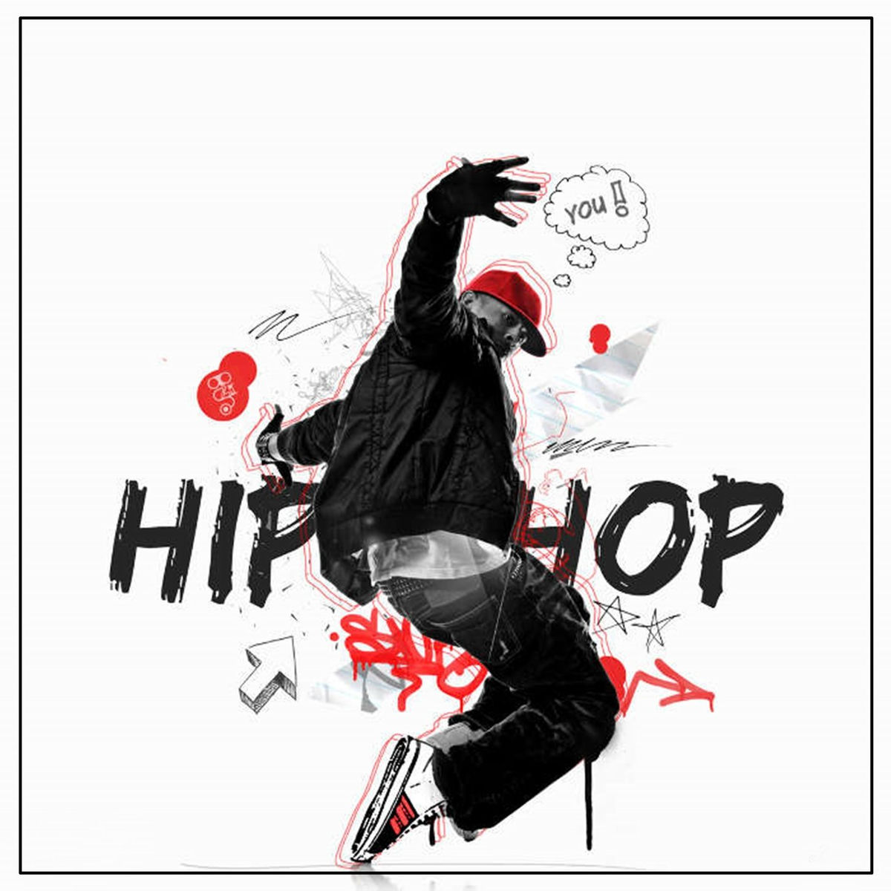

Nejznámější styly
Mezi nejznámější styly street dance patří hip hop, popping, locking, house dance a breaking. Každý z těchto stylů má svůj specifický rytmus, techniku i historii. Hip hop je známý svou volností a propojením s hudbou, která podporuje groove a přirozený pohyb. Popping pracuje s napínáním a uvolňováním svalů, čímž vytváří efekt „robotických“ pohybů. Locking je založený na výrazných pózách a rychlých pohybech rukou, které působí hravě a energicky. Breaking kombinující akrobacii, footwork a dynamické točky patří mezi nejnáročnější disciplíny.
Každý styl má svou komunitu, která rozvíjí techniku, historii i nové trendy. House dance je například založený na rychlé práci nohou a propojení s house music. Hip hopový styl zase často odráží náladu tanečníka a staví na improvizaci. Popping a locking jsou pevně spojeny s funkovou hudbou a přinášejí do tance přesnost i hravost. Breaking je celosvětově uznávaný také jako sport a stal se součástí olympijských her. Tyto styly dohromady tvoří pestrou škálu pohybů, která dává street dance obrovskou rozmanitost.

Zpět na hlavní stranu:
Jiná podtémata: